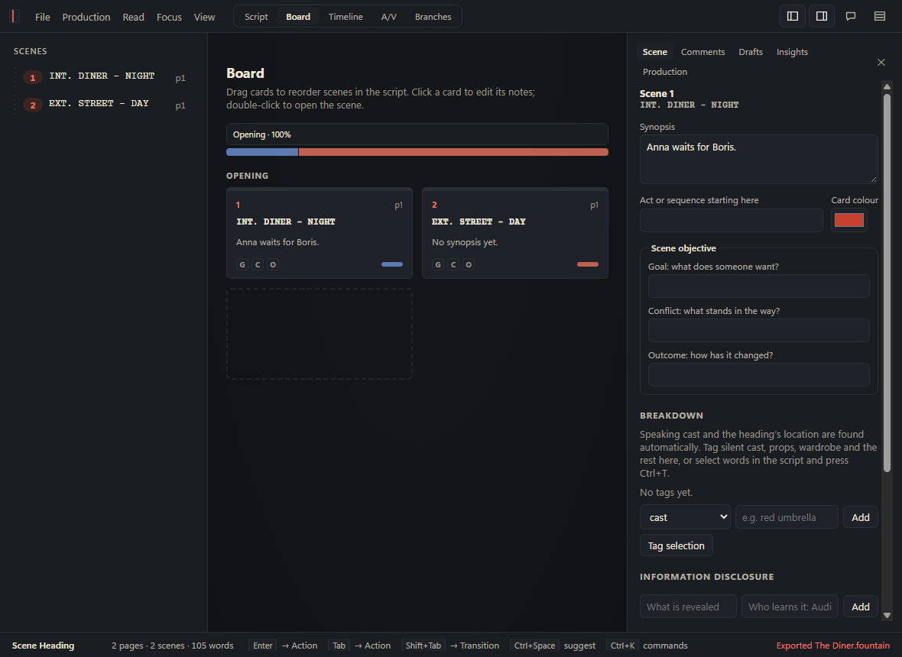

Margin reads your script like a script editor. It never writes a line of it.
Industry-standard pages and keyboard flow, plus a story model: say what your script is for, and Margin asks the questions that matter most, tied to the lines they are about.
Free for 14 days, no card needed. Then one price, with free updates forever.
INT. DINER - NIGHT
Anna slides the ring across the table. She doesn't look at him.
ANNA
I don't need anyone. I never have.
LEO
Then why did you call me?
Sc. 3: "Please. Just tonight."IntentionalResolved
A writing app and a careful reader, in one window
Writes like the industry standard
Final Draft's page layout and keyboard flow, SmartType for names and places, revision colours, locked pages and scene numbers. It opens FDX, PDF, Word and Fountain files and exports back to them.
Reads like a script editor
State the logline, theme, characters and what each scene is for. Margin checks continuity, structure, voice and pacing against it, ranks the notes, and shows the top three first.
Stays yours
Scripts live on your computer. There is no account. AI is optional, uses the model and key you choose, sends nothing until you ask, and only ever asks questions.
Everything a draft needs, from the first page to the shooting script
- Open almost any scriptFinal Draft, PDF, Word, Fountain, Fade In, Celtx, Highland, RTF and more. A report shows what came in and fixes misread elements in one step.
- Notes tied to linesQuestions about continuity, who knows what, dialogue, voice and pacing. Mark one Intentional with a reason and it stays set aside.
- The story, statedCharacter cards with want, need, wound and fear, and a purpose for every scene that shows up on the board.
- Board, timeline and A/VIndex cards in act lanes, a storyboard sized by screen time, and two-column scripts that edit the same pages.
- Production readyRevision colours and dates, A and B pages, omitted scenes, breakdown tagging and a breakdown export.
- Confidential draftsOne watermarked PDF per reader, with a log of who got which copy.
- Write togetherShare a script with people on your network, with scene locks and comment-only reviewers. Nothing goes through a server.
- Hear it readA table read with a voice for each character. With neural voices, save the whole read as audio.

One price. Yours to keep.
Paid once. Sold through Lemon Squeezy, which handles payment, tax and your receipt.
- Margin for Windows and Mac
- Use it on up to 3 of your computers
- Free updates, forever
- 14-day free trial with everything on, no card needed
- After the trial, your scripts still open, read and export